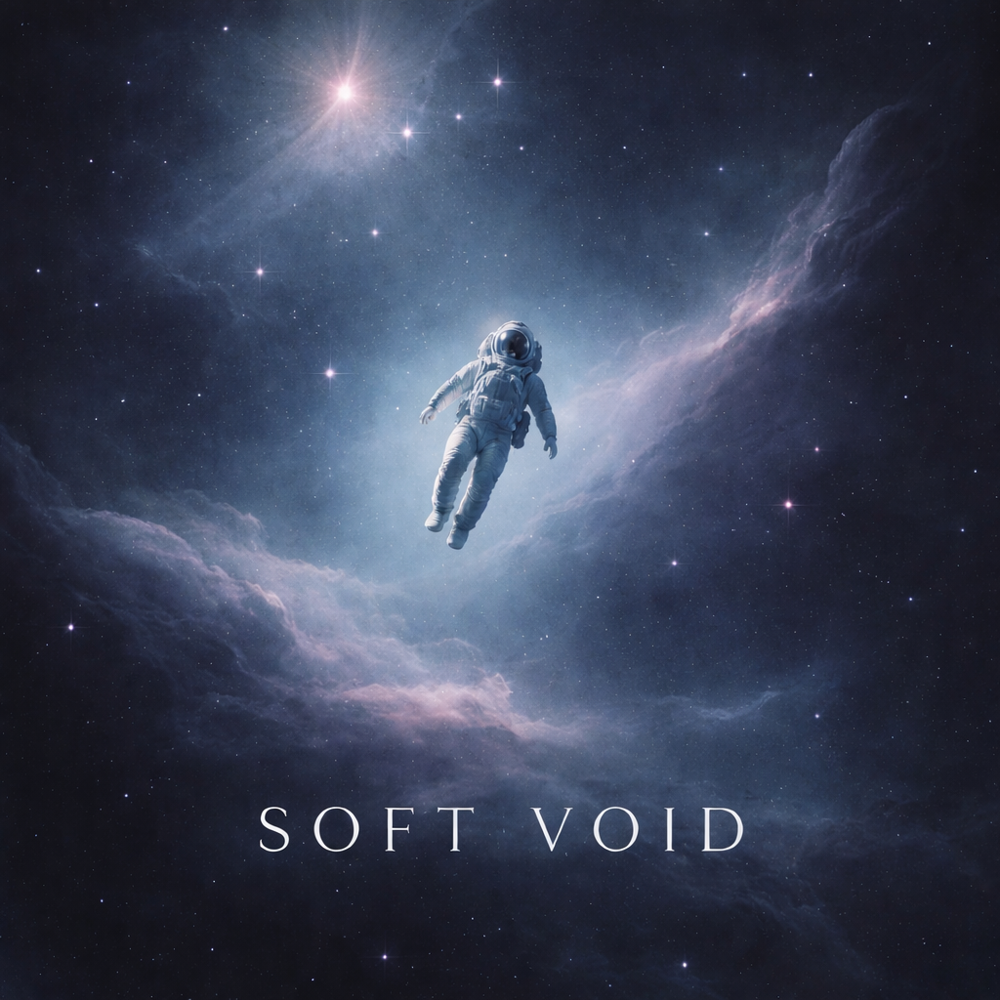

Atmospheric Production
Cinematic layers, tonal space, and emotional motion define the sound palette.
Music producer, lyricist, and student shaping immersive sonic worlds with cinematic emotion, textured atmosphere, and a distinctive independent studio voice.
This studio space is designed around mood, clarity, and depth, bringing music, visuals, and storytelling together in a polished scrolling experience.
Cinematic layers, tonal space, and emotional motion define the sound palette.
A studio look that feels modern, elevated, and aligned with artistic ambition.
A flexible foundation for upcoming tracks, collaborations, and expanding reach.
A curated collection of cinematic and atmospheric pieces, each built around tone, texture, and emotional space.

Cinematic ambient storytelling through solitude and layered emotion.

A restrained winter soundscape with calm movement and distant resonance.

Expansive textures and drifting tonal motion built for spacious listening.

A deeper cinematic work now in development with release details to come.

A newly released atmospheric piece built around softness, space, and emotional drift.
An independent music producer building atmospheric, cinematic, and emotionally driven compositions while shaping a long-term creative studio identity.
Milind Dixit creates music that leans into texture, space, and visual imagination. Each composition is approached as a world of its own, blending cinematic tone with an intimate emotional core.
The direction of Milind Dixit Studio is centered on consistency, evolution, and a polished presentation that supports both music releases and a broader creative presence.
For collaborations, feedback, and serious creative conversations, this section keeps the contact experience premium, direct, and fully integrated into the scrolling journey.
Whether you want to discuss music, ask about releases, or explore future work, this space is designed to make the first interaction feel polished and welcoming.
Social & Streaming Links
Follow the studio across video, streaming, and community channels with a cleaner, more polished launch point for every platform.
YouTube
Music videos, visual releases, and studio growth in motion.
YouTube Music
Direct access to releases inside the YouTube Music ecosystem.
Spotify
Listen to atmospheric and cinematic work on a leading platform.
Amazon Music
Discover the catalog across Amazon's music network.
Instagram
Short-form visuals, updates, and the evolving studio aesthetic.
X
Latest updates, announcements, and studio presence on your new account.
Discord
Join the community space for updates, conversation, and future drops.